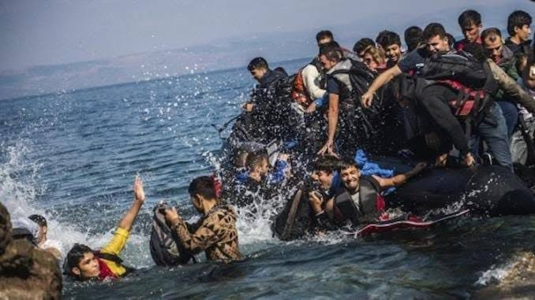

Hommage à vous tous qui avez péri en mer pour une meilleure vie , un meilleur monde .
Honte aux responsables et à tous ceux qui ont profité de ce business bien ficelé pour être informel.
Lettre d’un Harraga
Maman je t’écris d’une plage ou j’ai certainement échoué, on a du faire naufrage.
Maman je t’écris d’outre – mer ou d’outre-tombe, d’ailleurs je tremble.
Maman partir était une nécessité, prendre la mer une opportunité, en migrant illégal mon unique possibilité, mais en somme une vitalité.
Je suis désormais un clandestin à qui pourrait sourire le destin.
Je pourrais tout aussi devenir le festin d’une baleine, d’un requin.
En mer j’ai rencontré un tas de monde, des familles aussi en quête d’un meilleur monde.
Maman j’ai embarqué sur un vétuste radeau ou rafiot je ne sais plus trop.
Parti en desperado avec juste ta photo et un sac à dos.
Maman, entassés dans ce frêle esquif, la mer s’est empressée de sortir ses griffes.
Maman, il a suffi d’une grosse lame pour que ce semblant de voyage se transforme en drame.
Il y’a eu des survivants, des disparus, des noyés, des morts-vivants.
Maman, l’ambiance était triste sur ce rafiot, chacun avait les larmes aux yeux et le désespoir à fleur de peau.
Maman dans cette croisière de l’enfer ils étaient presque tous des universitaires, des médecins, des intérimaires, des ingénieurs, des ouvrières, des pâtissières.
c’est inimaginable de fuir ainsi sa patrie, sa terre nourricière.
Maman il y’avait aussi plein de filles à bord, ont — elles eu tort ? Elles rêvent tout simplement d’un meilleur avenir, un meilleur sort, un boulot, un mari, une lueur, une aurore, un confort.
Maman si tu voyais cette jeunesse désespérée, si tu pouvais savoir à quel point ils ont été inconsidérés, ignorés, si tu pouvais percevoir leur détresse démesurée.
Maman eux et moi n’avons pas eu le choix, avions perdu la joie, voulions un meilleur avenir quoi qu’il en soit, voulions mettre un terme à notre misère, à notre désarroi.
Maman, ce voyage de la dernière chance n’a aucun sens, quand devant tes yeux certains rendent l’âme en silence, sans résistance, dans l’indifférence.
Maman j’ai vu des enfants se noyer, je peux en témoigner, j’ai vu des jeunes batailler contre les écumes puis s’éloigner.
J’ai vu le désespoir, cette bête noire.
J’ai vu la rage remplacer sournoisement le courage.
Sur cette nouvelle terre qu’on admirait, idéalisait, il y’avait un long grillage et de l’hostilité criarde sur tous les visages.
Maman apparemment on est pas les bienvenus, on est juste des intrus, exclus, détenus ou en garde à vue, parvenu, mais confus, perdus, déçus, fichus, déchus.
Maman tout me manque maintenant, ma vie minable incontestablement, mon quartier indéniablement.
Maman l’herbe n’est pas plus verte ici, je ne suis pas à ma place par ici, mais il fallait tout de même que je le vérifie.
Maman ton odeur particulière obsède mes sens, ta voix envoutante dans ma tête résonne en puissance, ton opulence, ton élégance, ton indigence quand j’y pense….. Plus rien n’a de l’importance.
Maman je suis parti sans te dire au revoir, un certain soir, dans le noir, j’aurais souhaité t’enlacer, te dire adieu, t’embrasser, sentir ton foulard, ton mouchoir, garder tout ça en mémoire…. Une potence, un exutoire.
Tu m’aurais dissuadé, moi qui étais persuadé, engagé, enragé.
Maman j’ai survécu pour toi, j’ai nagé pour toi, ce qui m’a ramené à la vie c’est le son de ta voix.
Maman j’ai essayé chez nous, j’ai galéré sans le sou, assis et debout, j’ai failli devenir fou.
Maman notre pays nous a vomi, où est ce bel avenir qu’on nous avait promis ?
Maman, ma patrie je l’ai dans les tripes, au même titre que toi et mon père et le reste de l’équipe.
Maman j’étais néanmoins heureux auprès de toi, mais question avenir j’étais dans l’embarras, dans de beaux draps et il fallait que je trouve ma voie quoi qu’il en soit.
Maman dans mes rêves je rentrais chargés de cadeaux, histoire de prouver à tout le monde que j’ai réussi, que j’ai amassé un magot.
Maman je rêve de t’offrir un manoir, je rêve de te revoir.
Je rêve de t’offrir une maison, et de me faire une raison.
Je rêve de t’offrir des robes et des bijoux, de te faire des câlins, des bisous.
Je rêve de t’offrir des parfums, des tissus, je rêve du salut, d’être secouru.
Maman je divague entre toi et les vagues et mon statut de Harrag(migrant illégal)
Maman, maman ……
Réveille-toi mon fils qu’est ce qui te prend ? Tu es en nage et tu cries et marmonnes depuis un bon bout de temps.
Un cauchemar mon fils, un horrible cauchemar.
Nadjoua Bensalem.
Publication Facebook le 1 octobre 2021

← Tous les poèmes